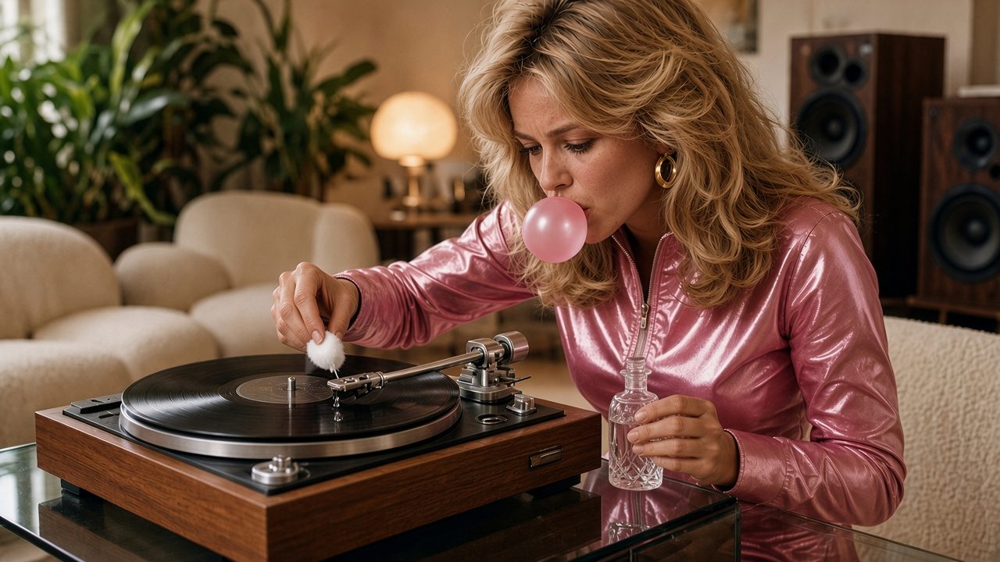
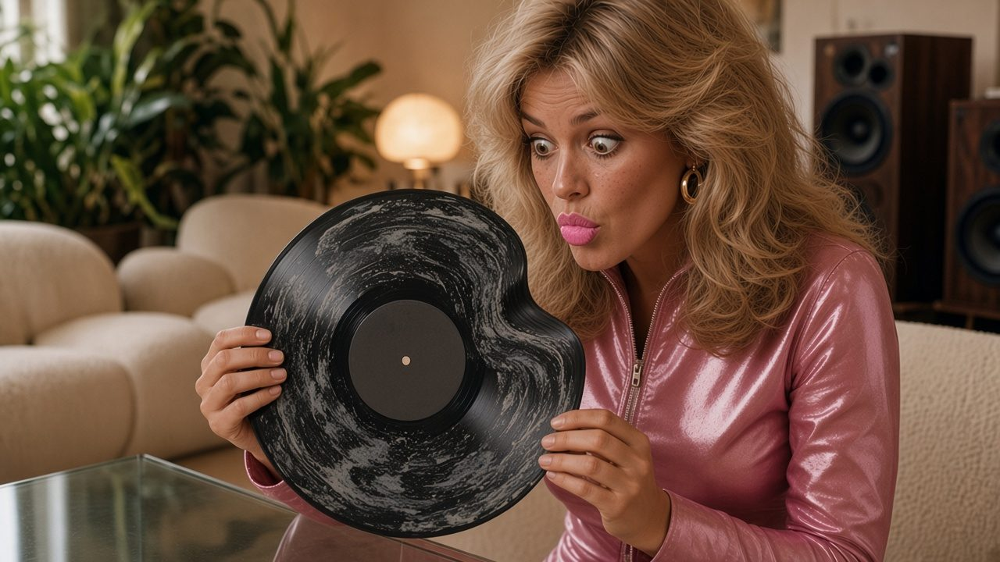

Vinyl desk · The interview ·
“It Said Fast-Acting”
Darlene Sparks of Upper Fudgeley, Ohio, cleaned her stylus with nail polish remover. It came up spotless. So did the place where the diamond used to be.

Darlene’s apartment looks like a magazine spread, because last spring it was one. It also smells like a beauty salon. She opens the door chewing gum, and she will not stop chewing it for the next forty minutes.
Darlene, what did you do to your turntable?
I cleaned the needle. Nail polish remover, on a cotton ball. *pop* It’s what I use on anything that needs to look new.
Why remover?
The bottle said “gentle” and “fast-acting”. One of those was true. *pop*
What happened?
The remover dissolved the glue that holds the little diamond on. The diamond left. I didn’t notice. I played side one of everything with what was left, which is a tiny metal stump. It doesn’t follow the grooves any more. It digs new ones.

And the records themselves?
I was generous with the cotton ball. It dripped. Wherever it landed, the vinyl went cloudy and soft, like a mirror at the hairdresser’s. Then the edges went wavy. *pop* My records now look the way I feel on Mondays.
“It doesn’t follow the grooves any more. It digs new ones.”
Do they still play?
They play. Everything sounds like it’s being sung from inside a can of hairspray. My brother says Fleetwood Mac sounds better. I’ve stopped speaking to my brother.
What does the apartment smell like?
A salon. My neighbour came over yesterday to book a perm. *pop*
Advertisement · fake

So you’re buying them back?
Every Saturday at Vern’s Spin City. There’s a queue now. It’s mostly me and a man who glued his. *pop* We compare receipts. He’s very sweet. He smells like a hardware store. I smell like a salon. Together we smell like a strip mall.
Is that… a date?
It’s a queue. *pop* We’ve had coffee twice. He brought his own mug. It was stuck to a record.
Any advice for our readers?
Support your local record shop. Vern’s putting in a new floor, and he says it’s thanks to the two of us. And keep the remover for your nails. *pop* That’s what it’s for.
Fine print: Darlene is invented. Never put acetone, nail polish remover or any other solvent on a stylus or a record: it can dissolve the glue that holds the diamond, and it clouds, softens and warps vinyl for good. Clean the stylus with a soft stylus brush, dry, stroking gently from back to front, the way the record moves. No records were harmed in the making of this interview. Two hundred and six were harmed before it.
← Back to the true tales